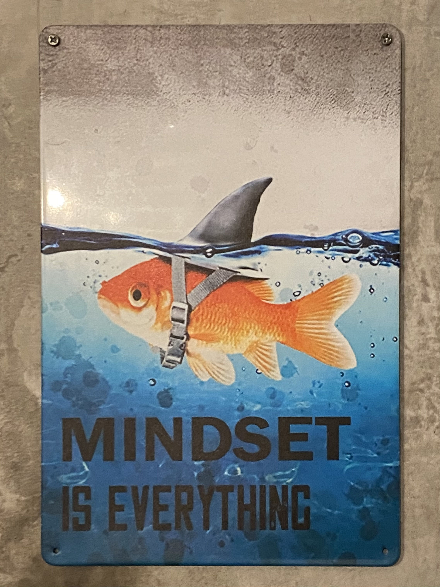

8 Sept 2026
It's nearly midnight, the night before I fly to Berlin to start a new life. I'm anxious to start work and figure out all the unknowns. For example: where is my apartment? If I paid for a month's rent, why will they not tell me my address?
At the moment though, I'm learning HTML so I can develop what I hope will become a quaint 90s-style website where I can host my Berlin blog and rebuild the portfolio that I recently lost (alongside the whole Adobe suite). Tonight, I was watching YouTube and, although I generally avoid self-help material these days, I clicked on a video from a 20-something who told me to "stop watching other people do what you want to do, and do it yourself" (she was more eloquent). So here we are.
Let's keep figuring out the basics of HTML. How about we try adding an image?

Nice. You, the reader, won't see it, but I just discovered that I don't need to make a new "branch" in GitHub for every page, which duplicates the entire site. Instead, I learned about folders (ooooo). I am proud and embarassed that I've never previously used GitHub, the coding platform that is generously hosting my website, so that will be part of this web dev exploration.
9 Sept 2026
Still messing around with coding. I reformatted my files from Markdown to HTML, that way the HTML actually works jaja.
I'm currently hanging out for a few hours in the world famous John Wayne Airport. My first leg (SNA>DEN) got delayed from 1 to 2 PM, meaning I'd miss my connection to Frankfurt, so the nice United lady rerouted me through SFO, departing 4 PM. More time to work on this blog ¯\_(ツ)_/¯
In other fun news, since I put down $1200 my alleged landlord still has not sent any paperwork or even an address. Every hour I suspect more and more that the listing is a scam. In the meantime, I've booked a hostel for a few days. Throughout this whole process, I keep reminding myself of my motto: Do Hard Things. Moving across the world to a new place where you don't know anyone is definitely a Hard Thing. But I was more so hoping for challenges that could be solved by hard work, rather than hard cash.